荒崎海岸
| 日付 | 2018年8月5日（日） |
|---|---|
| メンバー | 家族（妻、長女・7歳、長男・5歳） |
| アクセス | 車 |
今年2回目の荒崎海岸。
前回訪問より1ヶ月経っているので、水温は上昇してそうだ。
今回は今まで行ったことのないエリアを散策してみることにする。
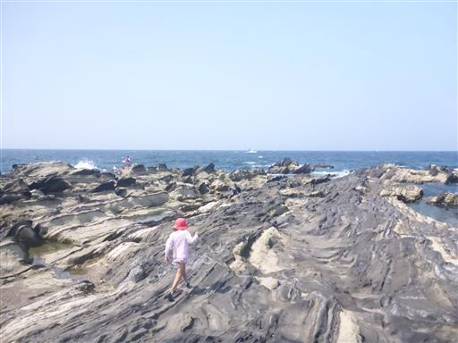
今まで遊んでいたのは目の前の海とその向こう側の岩地帯。今回はその対岸だ。
ここは陸から辿り着くことは難しく、海を泳いで来ないと辿り着けないので、人影はまばらだ。
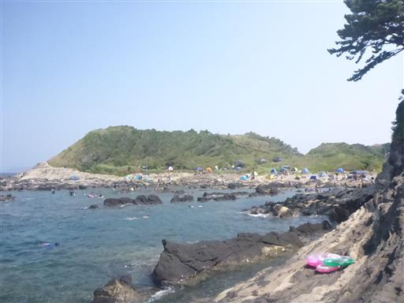
ここも複雑な地形にタイドプールがたくさんできている。
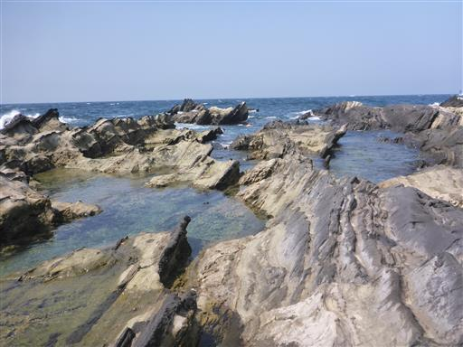
このエリアは釣り人も多い。邪魔にならないよう少し離れた場所で遊び始める。
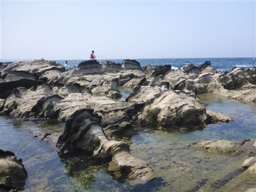
獲物を探す娘。
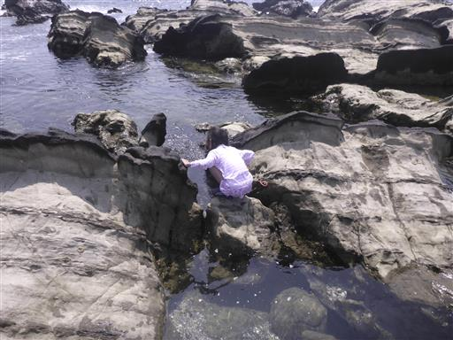
獲物を探す息子。
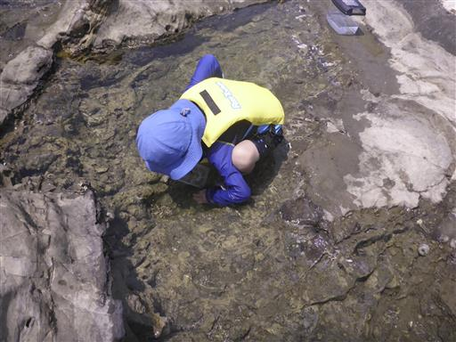
獲物を探す自分。
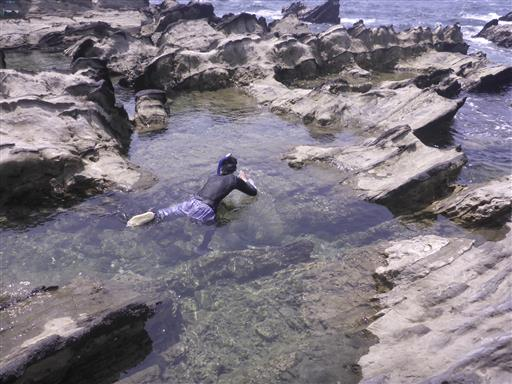
人が少ないおかげでこの辺りの水の透明度はかなり高い。
水の上からはほとんど生物が見えないのに、
水中を覗くとかなり多くの生物を発見できる。
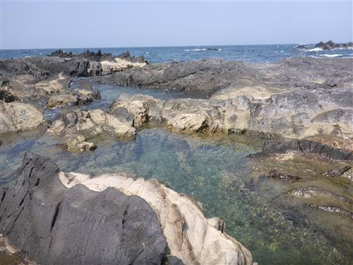
深いところ、浅いところ、色々あって面白い。
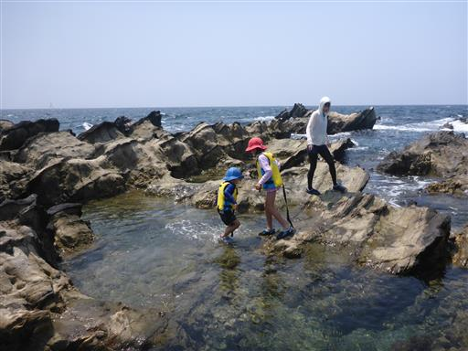
子供たちが遊んでいる間、少し深い海でシュノーケリングをする。
この付近は水深が急に深くなっていて、タカノハダイやソラスズメダイなどが見つかった。
ちょっとクラゲが多い。ミズクラゲではなさそうだが、名前は不明。
ネットで調べても危険なクラゲ情報しか載っておらず、そうでないクラゲの情報が不足だ。

捕まえたカニ。比較的大きめのものが獲れた。魚は速すぎて全く手も足も出ず。
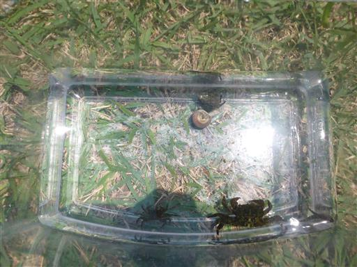
最後はいつも遊んでいる海に戻ってきて一遊びする。
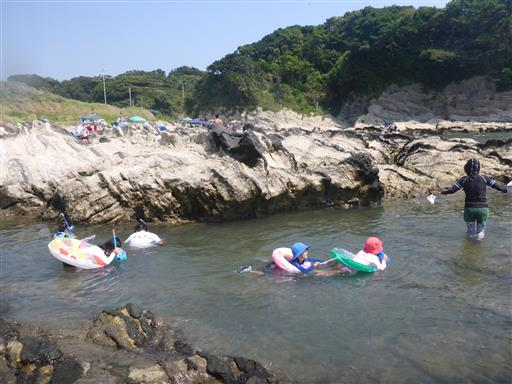
水中を覗く。深い入り江になっていて、水温は30度後半程度と思われるほど温かいが、
水が濁っていてほとんど何も見えない。
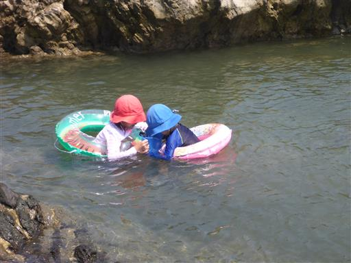
水深が浅いので安心して遊べる。
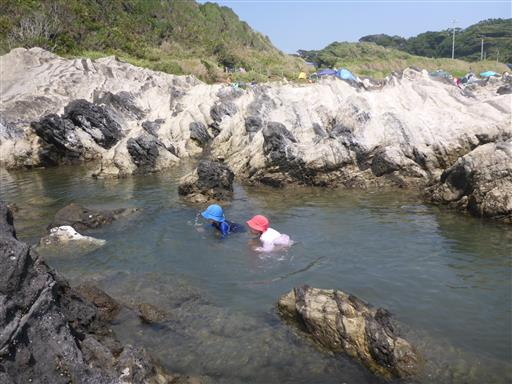
浮輪でプカプカ。近くのプールではこういう浮輪の乗り方は禁止されている。
ここでは安全管理は全て自己責任なので何でも自由だ。
来年あたりは家族全員でシュノーケリングをやってみたい。
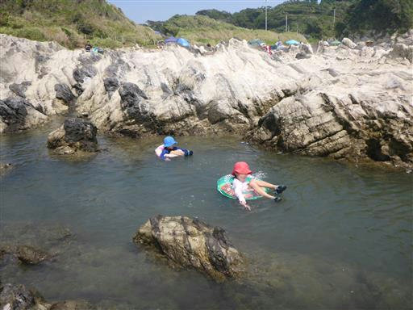
他の記録